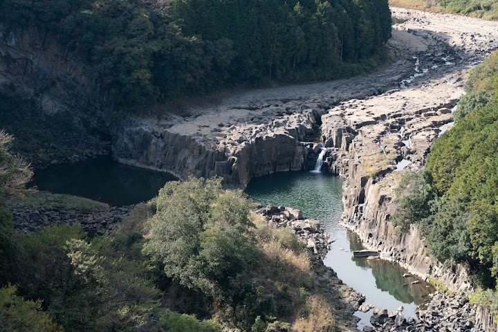
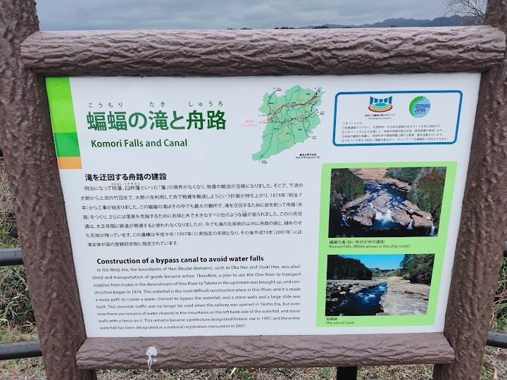
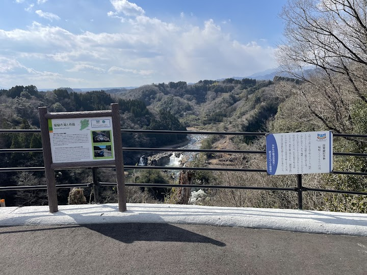
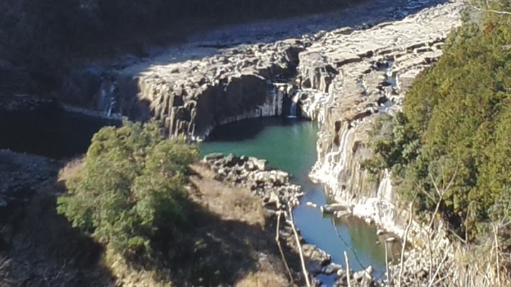
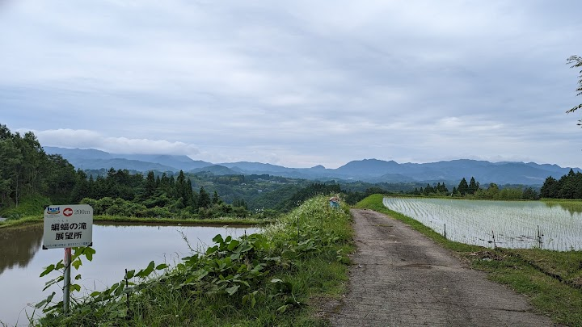

← Back to the itinerary
Kōmori Falls Observatory
Ogatamachi Kusabukano, Bungoono, Oita 879-6641, Japan
A viewing point with a sweeping look over a horseshoe bend in the river and a waterfall, popular with photographers and drone pilots.
Open in Google Maps (street view, more photos and reviews there)
 Photo: Sada San (さださん) (Google Maps)
Photo: Sada San (さださん) (Google Maps)
Photo: 曲賢治 (Google Maps)
Photo: S Miz (Google Maps)
Photo: 佐田龍亮 (Google Maps)
Photo: 大津留均 (Google Maps)
Photo: GUN MAN (Google Maps)No visitor tips about finding this place were available; use the Google Maps link.